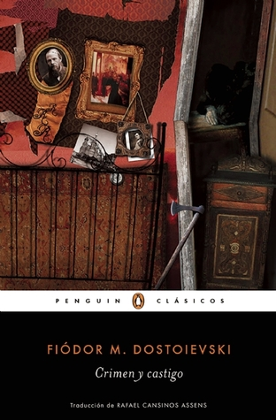

Crimen y castigo
Reseña por Jorge I. Zuluaga

Ver reseña en GoodReads (necesita cuenta)
Todo (o casi todo) fue nuevo para mí. Y no sé si eso es bueno o malo. Por un lado es bueno porque hay grandes obras que uno quisiera olvidar para volver a retomar como si nunca las hubieras leído. Por otro lado, me preocupó darme cuenta de que solo reconocí un personaje y un solo evento de la novela. Casi todo lo demás fue prácticamente nuevo para mí. Debo corregir entonces: yo, realmente, nunca leí a "Crimen y Castigo" y si la tuve entre la manos cuando era un adolescente, es casi seguro que soñé que la leía; o lo que es más probable, nunca la entendí.
Es difícil escribir una reseña sobre la que uno cree es una novela que ha leído todo el mundo. ¿Qué puede decir uno nuevo sobre "Crimen y Castigo"? ¿qué puede un lector de afán como yo decir que sea original o que invite a otros a leer una novela que tal vez ya leyeron? ¿pueden mis impresiones agregar algo a la grandeza de una obra maestra como esta?. Tal vez no.
O tal vez, sí. Porque si algo entendí releyendo Crimen y Castigo es que creer que todos hemos leído esta historia y podemos hablar de ella parece ser más bien una leyenda urbana.
Pero bueno, no es que sea muy frecuente que en una conversación entre amigos resulte una discusión sobre algún clásico de la literatura. Tampoco es frecuente que todo el mundo ande citando a Dostoyevsky en sus grupos de WhatsApp. Incluso, en coloquios más intelectuales, la obra de este autor ruso no es precisamente muy popular.
Pero, a juzgar por la manera como todos citamos otros clásicos y algunos de sus entrañables personajes, me da la impresión que "Crimen y Castigo" es una gran novela, no tan leído como creería cualquiera.
Les propongo que hagan un experimento sencillo: pregunten a sus conocidos si saben algo de la novela o si la han leído.
Algunos seguro dirán que la hicieron hace décadas y la olvidaron por completo (como creía que me paso a mí).
Otros dirán que la comenzaron y la abandonaron por falta de tiempo.
Ahora pregunte a los que dicen haberla leído, cómo recuerdan que termina, es más, pregunte tan solo cómo se desarrolla la trama central. Allí es dónde se da uno cuenta, y está es mi hipótesis, que "Crimen y Castigo" es tal vez una gran obra que muy desconocida.
Y es que no puede ser menos cuando, al hablar de Crimen y Castigo con quienes dicen haberla leído, solo se puede recordar a Raskolnikov y a la anciana que asesina. Pero no, "Crimen y Castigo" es mucho más que uno o dos personajes y un crimen (y tal vez un castigo, pero no voy a adelantar nada más).
Dos aspectos hacen de "Crimen y Castigo" una gran obra.
El primero, los personajes. Sí, es cierto que Rodión Románovich Raskolnikov es un personaje fascinante y complejo. Sí, es cierto que es el corazón de la historia y que la novela está narrada casi en primera persona. Pero Raskolnikov es la punta del iceberg humano de "Crimen y Castigo".
De todos los personajes, aparte de Raskolnikov, el que más me gusto y por el que siento una simpatía rayana en la adoración, es a su amigo Razumijin. ¡Que maravilla de personaje!. Si alguien dice haber leído "Crimen y Castigo" y no recuerda quién es Dmitri Prokófich Razumijin, o no la leyó realmente, o la abandono, o tiene el corazón de piedra. Razumijin, es lo que Raskolnikov pudo haber sido y no fue. Un doppelganger psicológico que inventó Dostoyevsky quizás para mostrarnos la forma en la que algunos hechos fortuitos pueden cambiar la vida de una persona "buena" y convertirla de repente en un criminal.
El segundo personaje entrañable en la historia es Sonia Semiónovna Marmeládova o para los amigos simplemente Sonia o Sofia (nunca entendí porque la llamaban así).
Sonia personifica en "Crimen y Castigo" la pobreza, la desdicha familiar, la desigualdad y el hambre y muchas otras de las cosas que sufría el pueblo ruso llano de su tiempo. Y es que no podía tener este papel lamentable nadie distinto que una mujer joven que por la maldita condición de su sexo, sumada a su inevitable pobreza, resulta ser doblemente más miserable.
Al mismo tiempo es casi imposible no admirar a esta pequeña mujer (así me la imagino a partir de la maravillosa descripción de Dostoyevsky), más resiliente que algunos de los hombres más fuertes de la novela, que se sobrepone al más miserable de los destinos personales y familiares para llegar al final.
¿Qué decir ahora de Katerina Ivánovna Marmeládova, la madrasta de Sonia?. ¡Que personaje!. Si Sonia era miserable por su condición de mujer joven y pobre, la miseria de Katerina es doble: una mujer proveniente de una clase social privilegiada que por una decisión desafortunada se convirtió en una mujer pobre, en la esposa de un borracho con un corazón grande pero un bolsillo roto, una mujer enferma pero al mismo tiempo orgullosa y amorosa.
Y así podríamos seguir con los demás personajes, la entrañable Nastasia Petrovna (¡la adoré! aunque su papel es más bien secundario), la hermana de Rodia, Avdotia Románovna Raskólnikova, de la que es difícil no enamorarse por las descripciones de Dostoyevsky, el miserable Piotr Petróvich Luzhin, el reflejo patente de los hombres privilegiados de una sociedad increíblemente desigual, el misterioso Arcadio Ivánovich Svidrigáilov, autor del único crimen "justo" de la novela (¡no más spoilers!), el "maravilloso" Semión Zajárovich Marmeládov, padre y esposo amoroso al que la bebida le hace la vida cuadritos o el brillante Porfirio Petróvich, el Sherlock Holmes de "Crimen y Castigo".
El segundo aspecto que hace de está una obra fantástica son los diálogos.
Y no es para menos, obviamente: Dostoyevsky es un verdadero maestro en esta materia.
Pero no solo los diálogos entre los personajes; también los diálogos internos de algunos de ellos, especialmente y por obvias razones, los que sostiene Raskolnikov consigo mismo.
Hay dos diálogos particularmente fantásticos (de las decenas que hay en todo el libro) y que recomiendo leer con atención.
El primero, es la conversación entre Raskolnikov y Semión Marmeládov al "principio" de la novela. En primer lugar se trata de un diálogo conmovedor que refleja, como lo hace la vida de Sonia, su hija, la miseria de la sociedad rusa de la época: una verdadera pieza de novela histórica en medio de una obra que no aspira a serlo. Nunca creí que ese diálogo, que parecería ser una historia paralela sin mucha importancia, iba a resultar ser central en toda la trama. Hay que leerlo con atención.
El segundo y tercer diálogo que resaltaría, son aquellos que sostienen Raskolnikov, en dos momentos claves de la historia, con el juez Porfirio Petróvich. ¡Que buena pieza de literatura!. Diálogos de gran profundidad intelectual, llenos de profundas reflexiones filosóficas, psicológicas e incluso históricas. Esas decenas de páginas ameritan la lectura de toda la novela.
Mejor dicho: en "Crimen y Castigo" ¡el crimen es lo de menos! (aunque el castigo no lo es). Si creen que leyeron esta novela, pero solo recuerdan a Raskolnikov y su hacha, vuelvan a leerla. Por ahí no es.